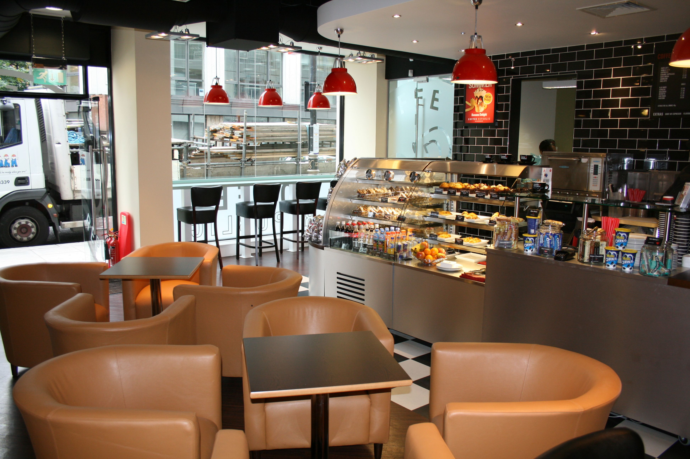
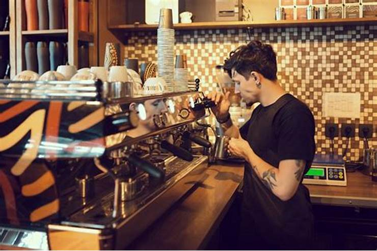
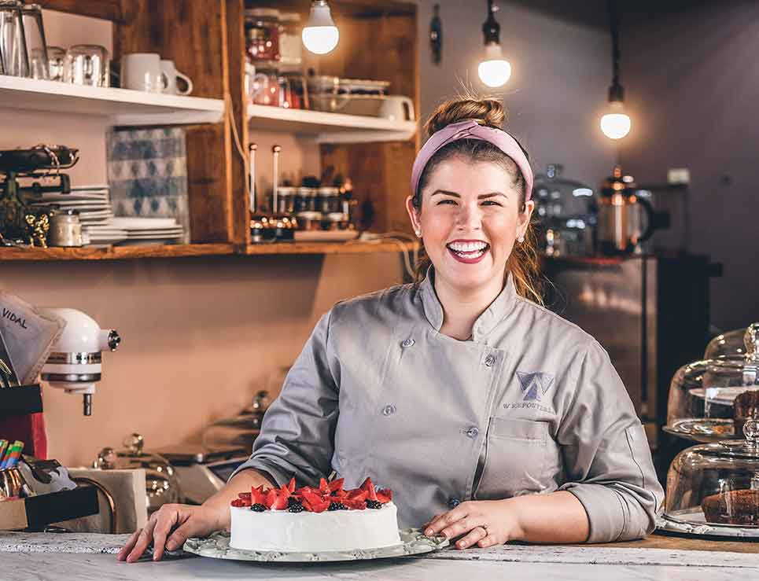
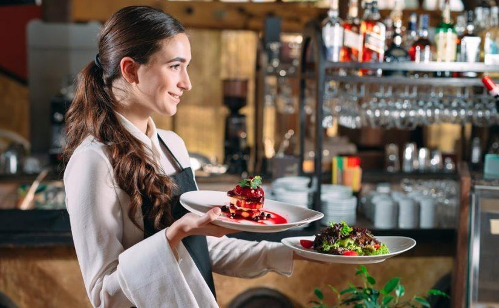

Nuestra Historia
En Dulce Gusto, nuestra pasión por el café comenzó hace más de 10 años, cuando decidimos crear un espacio donde la calidad, el sabor, y el servicio se unieran para brindar una experiencia única. Desde entonces, hemos trabajado cada día para ofrecer lo mejor a nuestros clientes, seleccionando cuidadosamente los granos de café y perfeccionando cada detalle de nuestras recetas.
Nuestros Valores
- Calidad: Solo utilizamos ingredientes frescos y de primera calidad.
- Sostenibilidad: Apoyamos a productores locales y usamos empaques biodegradables.
- Comunidad: Nos enorgullece ser un lugar de encuentro para todos.
Conoce a Nuestro Equipo

Lucas Cruz
Barista principal con más de 5 años de experiencia.

Jackelin Sorto
Experta en repostería artesanal y recetas creativas.

Ana Garcia
Mesera apasionada por la hospitalidad y el buen servicio.